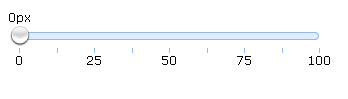

Slider
当滑块控件沿着轨道移动的时候，将会显示一个提示来表示当前值
用户可以通过设置其属性自定义滑块
如图: 
使用< input >标签来创建滑动条，设置class属性为easyui-slider
使用< div >创建滑动条，但是'value'属性是无效的
可以使用javascript来创建
可以通过"setValue"方法来设置slider的值，通过“getValue”获取slider的值
还有一个常用的onchange事件，在值发生变化时触发
真实案例
jQuery EasyUI
注意:可以通过max与min属性设置滑动条的最大与最小值